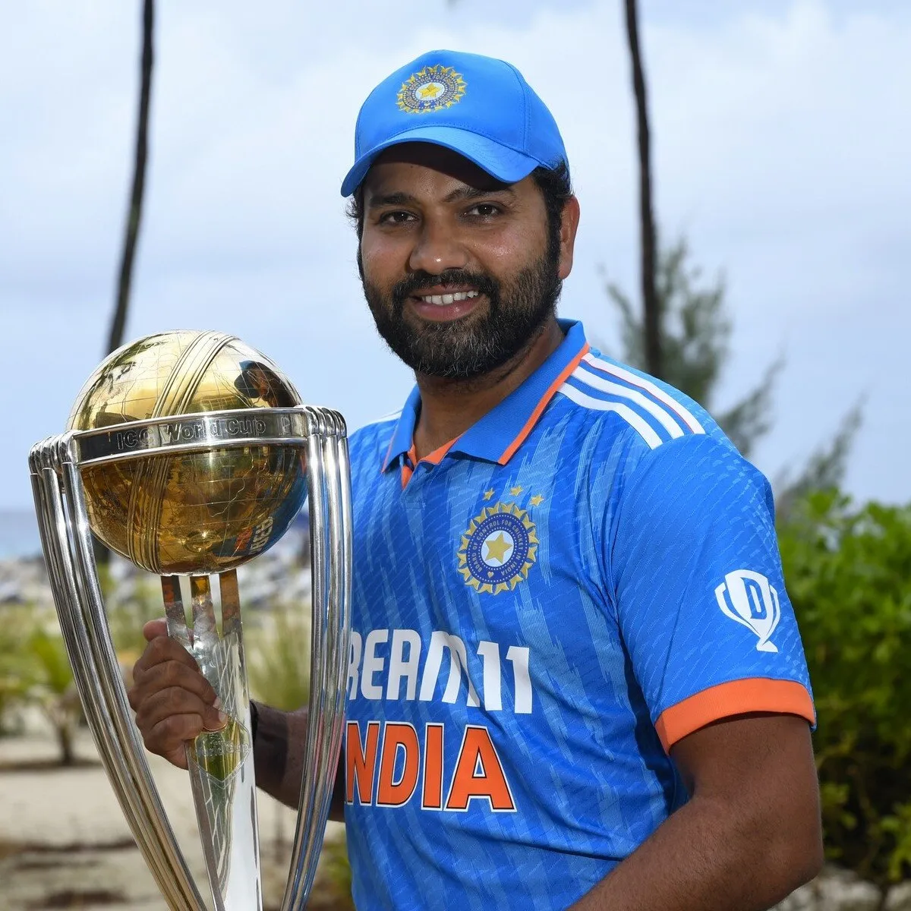
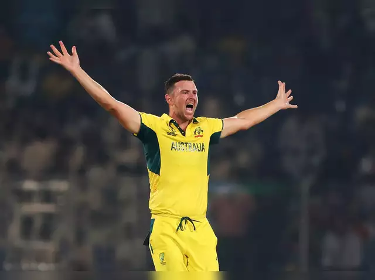
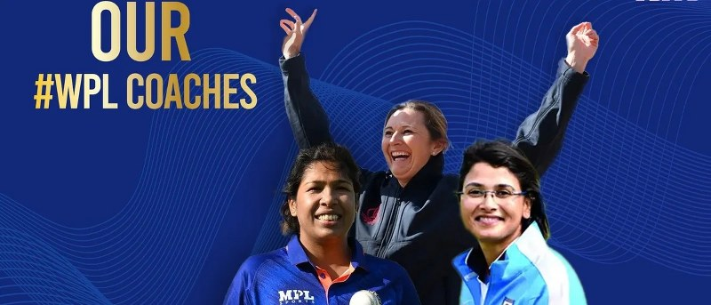

- Live Score
- Series
- Terms
- News
- Features
- Videos
Trending News
- Women's T20 Wc - Read More
- IPL 2023 - Read More
- India & New Zealand - Read More
- India & Australia - Read More
- South Africa Vs England - Read More
Rohit Sharma's Test captaincy faces its first huge test
It's made a spluttering sort of start in Test cricket: Rohit missed three of India's five Tests since he became their all-format captain. Injuries, in fact, have forced Rohit to miss eight of India's last 10 Test matches. He was Player of the Match in India's last Test before this stretch of games, a landmark victory that took them to a 2-1 series lead in England, months after they had beaten Australia 2-1 in Australia.
Josh Hazlewood to miss first Test against India
Australia fast bowler Josh Hazlewood is set to miss the first Test against India in Nagpur with an Achilles niggle in his left leg, and is doubtful for the second Test in Delhi as well.
Australia aware of reverse-swing threat amid spin talk
Australia are prepared for moments where batting could become chaotic against India, but will also enter the series with an open mind amid all the talk about the role spin could play.
Charlotte Edwards to coach Mumbai's WPL team
Edwards will be part of an all-woman coaching staff that also includes former India captain Jhulan Goswami, who will be mentor and bowling coach of the franchise that was bought by owners of the Mumbai Indians. Devika Palshikar, the former India allrounder, has been named batting coach.